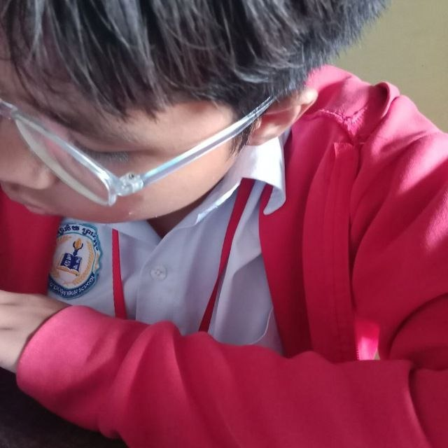
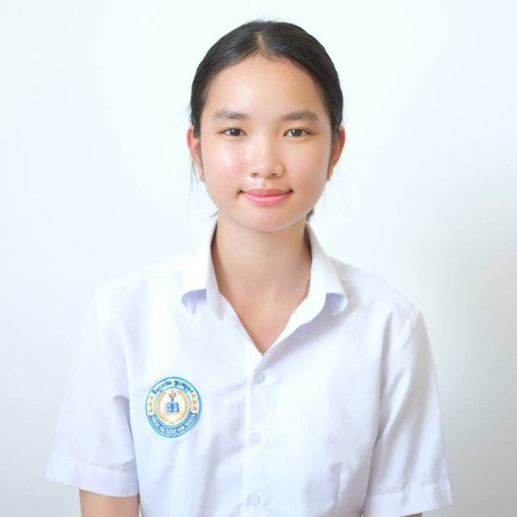
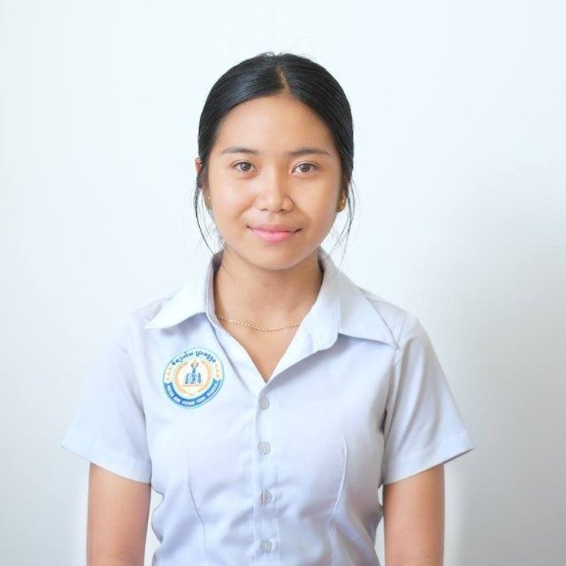
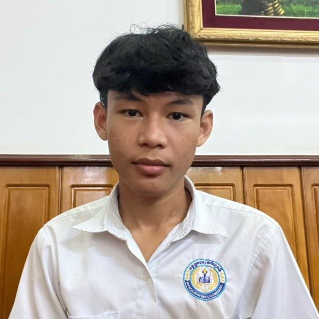
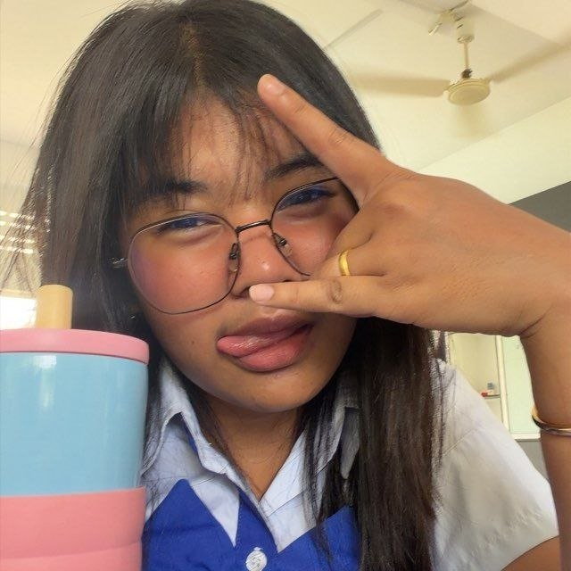
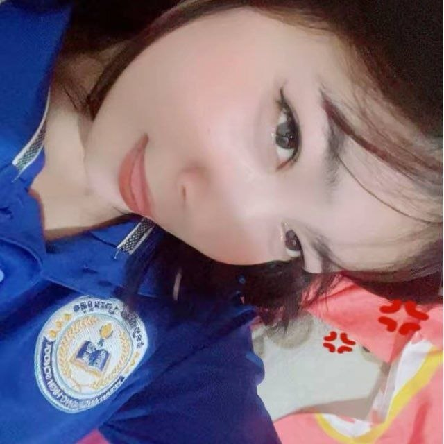

សមាជិកក្រុមរបស់យើង
ក្រុមសិស្សថ្នាក់ទី១០(B) នៃសាលារៀនជំនាន់ថ្មី វិទ្យាល័យព្រះអង្គឌួង

សារ៉ាត់ លាងស្រេង
ប្រធានក្រុម / Web Developerសិស្សថ្នាក់ទី១០(B) មានជំនាញក្នុងការសរសេរកូដ HTML, CSS និងដឹកនាំការងារក្រុមដើម្បីសម្រេចគម្រោង។

វណ្ណ ដារ៉ារក្សា
អនុប្រធាន / UI Designerចូលចិត្តការរចនាទំព័រវេបសាយ និងផ្គូផ្គងពណ៌ឱ្យមានភាពទាក់ទាញ ព្រមទាំងជួយសម្របសម្រួលការងារ។

សុផល សោម៉ាវត្តី
Content Researcherទទួលបន្ទុករៀបចំ និងស្រាវជ្រាវព័ត៌មានប្រវត្តិសាលា និងខ្លឹមសារផ្សេងៗសម្រាប់ដាក់លើវេបសាយ។

សំអាង រ៉ាយុទ្ធ
Frontend Assistantជួយក្នុងការរៀបចំ Structure នៃកូដ និងពិនិត្យមើលភាពត្រឹមត្រូវនៃទំព័រវេបសាយនៅលើ Mobile។

រ៉េត រតនា
Media & Graphicsទទួលខុសត្រូវលើការរៀបចំរូបភាព កាត់ត និងកែសម្រួលដេគ័រស្ទីលឱ្យត្រូវតាមប្រធានបទសាលា។

យីម វីច្ឆកា
Quality Testerពិនិត្យមើលកំហុស អក្ខរាវិរុទ្ធ និងសាកល្បង Links ទាំងអស់ក្នុងគេហទំព័រឱ្យដំណើរការបានល្អ។